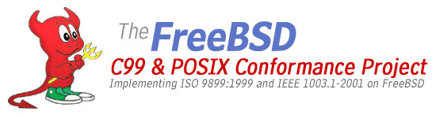

Projet de mise en conformité de FreeBSD aux normes C99 et POSIX®
Le projet de mise en conformité de FreeBSD aux normes C99 et POSIX® a pour objectif d'implémenter l'intégralité des standards ISO 9899:1999 (C99) et IEEE 1003.1-2001 (POSIX). Dans les cas où certains aspects de ces standards ne pourraient pas être suivis, ces différences seront documentées dans les manuels c99(7) ou posix(7). Un autre but de ce projet est d'implémenter des tests de manière à pouvoir s'assurer de la justesse des implémentations à chaque fois que cela est possible.
L'ensemble du développement initial a lieu dans la branche -CURRENT et la plupart des modifications sont intégrées dans la branche -STABLE. Comme il s'agit d'un projet important et uniquement basé sur le volontariat, aucun planning n'a été établi.
Le projet est toujours à la recherche de volontaires. Si vous souhaitez participer, le meilleur moyen de se tenir au courant de l'activité du projet est de s'abonner à la liste de diffusion freebsd-standards. Si vous travaillez sur une tâche spécifique en rapport avec ce projet, merci de contacter la liste de diffusion en joignant une description de vos travaux de manière à ce qu'ils soient ajoutés à la liste ci-dessous.
ISO/IEC 9899:1999, aussi connu sous le nom C99, est disponible à l'achat sous forme électronique sur le site American National Standards Institute ou sur le site International Organization for Standardization store sous forme électronique et papier.
IEEE Std 1003.1-2001 - La version gratuite (inscription obligatoire) en ligne du standard POSIX.1-2001 et SUSv3.
Are you Ready For C99? - Cet article discute de certaines des nouvelles fonctionnalités proposées dans C99.
La plupart des discussions relatives à ce projet se déroulent sur la liste de diffusion freebsd-standards@FreeBSD.org. Pour vous abonnez à cette liste, envoyez un message à freebsd-standards-subscribe@FreeBSD.org.
Jens Schweikhardt maintient une liste qui décrit le statut actuel de la conformité des utilitaires POSIX dans FreeBSD.
| Tâche | Responsable | Dernière mise à jour | Statut | |
|---|---|---|---|---|
| 7.X | 6.X | |||
| Documentation | ||||
| Créer le manuel stdint(7) pour documenter <stdint.h>. | Mike Barcroft | 15 Septembre 2002 | ||
| Documenter flockfile(3), ftrylockfile(3), funlockfile(3). | Tim J. Robbins | 22 Janvier 2004 | ||
| Documenter les nouvelles options _SC dans sysconf(3) (PR: 20528). | Tom Rhodes | 13 Janvier 2005 | ||
| Documenter le niveau de conformité de l'API. | 26 Mars 2002 | |||
| Documenter la sûreté des threads et des "annulations asynchrones" ("async-cancel"). | 26 Mars 2002 | |||
| Créer les manuels c99(7) et posix(7). | 11 Décembre 2001 | |||
| Documenter dans posix(7) le fait que les utilitaires de gestion des traitements par lots sont disponibles dans le port net/generic-nqs. | 11 Décembre 2001 | |||
| Tâche | Responsable | Dernière mise à jour | Statut | |
|---|---|---|---|---|
| 7.X | 6.X | |||
| Fonctions et Appels systèmes | ||||
| Ajouter le rapport __func__ à assert(3). | Jeroen Ruigrok/Asmodai | 27 Octobre 2001 | ||
| Implémenter imaxabs(), imaxdiv(), llabs(), lldiv(). | Mike Barcroft | 14 Novembre 2001 | ||
| Implémenter atoll(), strtoimax(), strtoumax(). | Bill Fenner | 27 Novembre 2001 | ||
| Implémenter les nouveaux indicateurs de longueur (hh, j, t, z) et les nouveaux flag (') dans printf(3). | Garrett Wollman, Bill Fenner |
30 Novembre 2001 | ||
| Implémenter strerror_r(). | Wes Peters | 20 Decembre 2001 | ||
| Implémenter tgamma() basé sur gamma() de Lite1. | Bruce Evans | 27 Mars 2002 | ||
| Implémenter les nouveaux indicateurs de longueur (hh, j, ll, t, z) dans scanf(3). | Bill Fenner | 20 Avril 2002 | ||
| Ajouter WCONTINUED à waitpid(2). | Mike Barcroft | 1er Juin 2002 | ||
| Implémenter les nouveaux indicateurs de conversion (%j et %n) dans printf(9). | Dima Dorfman Dag-Erling Smørgrav |
3 Juin 2002 | ||
| Implémenter fstatvfs() et statvfs() (trivial). | Garrett Wollman | 14 Juin 2002 | ||
| Implémenter fmtmsg(). | Mike Barcroft | 8 Août 2002 | ||
| Implémenter ulimit(). | Kyle Martin | 8 Août 2002 | ||
| Implémenter _Exit() de C99. | Garrett Wollman | 11 Septembre 2002 | ||
| Ajouter les options requises par POSIX.1-2001 à glob(). (MFC partiel) | Mike Heffner | 20 Septembre 2002 | ||
| Mettre à jour sysconf(3) pour POSIX.1-2001. | Garrett Wollman | 18 Septembre 2002 | ||
| Remettre insque(), lsearch(), remque() à partir de libcompat. | Robert Drehmel | 16 Novembre 2002 | ||
| Implémenter fpclassify(). | David Schultz, Mike Barcroft |
8 Février 2003 | ||
| Implémenter isfinite(), isinf(), isnan(), isnormal(). | David Schultz | 17 Février 2003 | ||
| Implémenter isgreater(), isgreaterequal(), isless(), islessequal(), islessgreater(). | David Schultz | 17 Février 2003 | ||
| Implémenter signbit(). | Mike Barcroft | 17 Février 2003 | ||
| Implémenter sockatmark(). | Bill Fenner | 23 Décembre 2002 | ||
| Implémenter wordexp() et wordfree(). | Tim J. Robbins | 31 Décembre 2002 | ||
| Implémenter grantpt(), posix_openpt(), ptsname(), unlockpt(). | Ryan Younce | 4 Février 2003 | ||
| Ajouter le support des nombres à virgule flottante pour l'indicateur (') de printf(3) | David Schultz | 22 Janvier 2004 | ||
| Ajouter les nouveaux indicateurs de conversion (%a et %A) à printf(3). | David Schultz | 22 Janvier 2004 | ||
| Transition vers une source externe (Netlib) pour strtod.c. | David Schultz | 22 Janvier 2004 | ||
| Importer le gdtoa de Netlib (strtof, strtold, etc.). | David Schultz | 22 Janvier 2004 | ||
| Implémenter les macros C99 fpclassify(), isfinite(), isinf(), isnan(), isnormal(), signbit(). | Mike Barcroft, David Schultz |
22 Janvier 2004 | ||
| Implémenter les macros C99 isgreater(), isgreaterequal(), isless(), islessequal(), islessgreater(), isunordered(). | Mike Barcroft, David Schultz |
22 Janvier 2004 | ||
| Implémenter les nouveaux types de format hexadécimal en virgule flottante (%a/%A) dans scanf(3). | David Schultz | 22 Janvier 2004 | ||
| Implémenter getpwnam_r(), getpwuid_r(). | Jacques Vidrine | 7 Juin 2004 | ||
| Implémenter posix_madvise(). | Bruce M. Simpson | 7 Juin 2004 | ||
| Implémenter les nouvelles fonctions qui apparaissent dans <fenv.h>. | David Schultz | 7 Juin 2004 | ||
| Implémenter ftw() et nftw() en termes de fts(). | David Schultz | 8 Juillet 2004 | ||
| Implémenter les fonctions d'arrondis C99 lrint(), lrintf(), lrintl(), llrint(), llrintf(), llrintl(). | David Schultz | 13 Janvier 2005 | ||
| Implémenter getgrgid_r(), getgrnam_r(). | Wes Peters | 19 Août 2005 | ||
| Récupérer a64l(), l64a() et l64a_r() (extension) depuis NetBSD (PR: 51209). | Tom Rhodes | 27 Février 2006 | ||
| Implémenter les nouvelles fonctions qui apparaissent dans <complex.h>. | Mark Murray | 6 Février 2002 | ||
| Implémenter waitid(2). | Mike Barcroft | 27 Mai 2002 | ||
| Implémenter la famille de fonctions utmpx. | Robert Drehmel | 28 Juin 2002 | ||
| Ajouter les indicateurs de restriction de type aux fonctions qui le nécessitent. | Robert Drehmel | 16 Août 2002 | ||
| Implémenter iconv(), iconv_close(), iconv_open(). | Tim J. Robbins | 8 Octobre 2002 | ||
| Mettre à jour fmtcheck(3) pour prendre en compte les nouveaux indicateurs de printf(3). | 16 Octobre 2002 | |||
| Rendre complètement sûre l'utilisation des fonctions avec les threads. | 22 Octobre 2001 | |||
| Rendre complètement sûre "l'annulation asynchrone" ("async-cancel") des fonctions. | 22 Octobre 2001 | |||
| Ajouter le support de SIG_HOLD à signal(3)/sigaction(2). | 13 Octobre 2002 | |||
| Implémenter les fonctions RTS sigqueue(), sigtimedwait(), sigwaitinfo(). | 13 Octobre 2002 | |||
| Implémenter posix_mem_offset(), posix_typed_mem_get_info(), posix_typed_mem_open(), posix_memalign() (PR: 85090). | 7 Juin 2004 | |||
| Implémenter des versions en double long des routines de libm (PR: 82654). | 13 Janvier 2005 | |||
| Implémenter exp2(), fma(), log2(), nan(), nexttoward(), et remquo() dans libm (PR: 83845). | 13 Janvier 2005 | |||
| Tâche | Responsable | Dernière mise à jour | Statut | |
|---|---|---|---|---|
| 7.X | 6.X | |||
| Fichiers en-têtes | ||||
| Corriger les prototypes et cacher les portions non conformes de <arpa/inet.h>. | Mike Barcroft | 19 Février 2002 | ||
| Implémenter <stdint.h> et <inttypes.h>. | Mike Barcroft | 1er Mars 2002 | ||
| Ajouter les primitives de contrôle de déclaration à <sys/cdefs.h> (développées à l'origine par Garrett Wollman). | Mike Barcroft | 1er Avril 2002 | ||
| Implémenter <sys/_types> pour stocker les types MI partagés. | Mike Barcroft | 1er Avril 2002 | ||
| Implémenter l'en-tête <strings.h>, et essayer de résoudre les problèmes de compatibilité avec <string.h>. | Mike Barcroft | 4 Avril 2002 | ||
| Cacher les portions non conformes, ajouter les types manquants à <sys/un.h>. | Mike Barcroft | 19 Avril 2002 | ||
| Faire un nettoyage et ajouter les macros manquantes à <netinet/in.h> et <netinet6/in6.h>. | Mike Barcroft | 23 Mai 2002 | ||
| Cacher les portions non conformes de <sys/wait.h>. | Mike Barcroft | 3 Juin 2002 | ||
| Cacher les portions non conformes de <pwd.h>. | Mike Barcroft | 9 Juin 2002 | ||
| Créer <sys/statvfs.h> basé sur les spécifications POSIX. | Garrett Wollman | 14 Juin 2002 | ||
| Ajouter nfds_t et corriger plusieurs problèmes dans <poll.h> (actuellement <sys/poll.h>). | Mike Barcroft | 8 Juillet 2002 | ||
| Implémenter l'en-tête XSI, <cpio.h>. | Mike Barcroft | 1er Août 2002 | ||
| Implémenter <fmtmsg.h>. | Mike Barcroft | 8 Août 2002 | ||
| Implémenter <ulimit.h>. | Kyle Martin | 8 Août 2002 | ||
| Intégrer <machine/ansi.h> et <machine/types> dans un nouvel en-tête commun <machine/_types.h>. | Bruce Evans, Mike Barcroft |
23 Août 2002 | ||
| Corriger les espaces de nommage et ajouter les types manquants dans <sys/mman.h>. | Mike Barcroft | 29 Août 2002 | ||
| Corriger les problèmes d'espace de nommage dans <ctype.h>. | Mike Barcroft | 9 Septembre 2002 | ||
| Corriger les problèmes d'espace de nommage dans <dlfcn.h>. | Garrett Wollman, Mike Barcroft |
11 Septembre 2002 | ||
| Corriger les problèmes d'espace de nommage dans <fcntl.h>. | Mike Barcroft | 18 Septembre 2002 | ||
| Corriger les problèmes d'espace de nommage dans <fnmatch.h>. | Mike Barcroft | 18 Septembre 2002 | ||
| Corriger les problèmes d'espace de nommage dans <grp.h>. | Mike Barcroft | 18 Septembre 2002 | ||
| Corriger les problèmes d'espace de nommage dans <langinfo.h>. | Mike Barcroft | 18 Septembre 2002 | ||
| Ajouter une macro va_copy() à <stdarg.h> (actuellemen <machine/stdarg.h>). | Mike Barcroft | 20 Septembre 2002 | ||
| Corriger les problèmes d'espace de nommage dans <stdlib.h>. | Garrett Wollman | 21 Septembre 2002 | ||
| Ajouter les nouvelles constantes de chemins de fichiers, variables systèmes et d'options POSIX à <unistd.h>. | Garrett Wollman | 21 Septembre 2002 | ||
| Intégrer les deux en-têtes math.h incompatibles dans un seul en-tête. | Bruce Evans | 2 Octobre 2002 | ||
| Corriger les problèmes d'espace de nommage dans <net/if.h>. | Mike Barcroft | 2 Octobre 2002 | ||
| Corriger les problèmes d'espace de nommage dans <netinet/tcp.h>. | Mike Barcroft | 2 Octobre 2002 | ||
| Ajouter size_t et corriger regoff_t dans <regex.h>. | Mike Barcroft | 2 Octobre 2002 | ||
| Corriger les problèmes d'espace de nommage dans <sched.h> (actuellement <posix4/sched.h>). | Mike Barcroft | 5 Octobre 2002 | ||
| Corriger les problèmes d'espace de nommage dans <semaphore.h> (actuellement <posix4/semaphore.h>). | Mike Barcroft | 5 Octobre 2002 | ||
| Corriger les problèmes d'espace de nommage dans <setjmp.h> (actuellement <machine/setjmp.h>). | Mike Barcroft | 5 Octobre 2002 | ||
| Corriger les problèmes d'espace de nommage dans <stdio.h>. | Garrett Wollman | 7 Octobre 2002 | ||
| Ajouter les membres manquants à la structure lconv dans <locale.h>. | Tim J. Robbins | 9 Octobre 2002 | ||
| Corriger les problèmes d'espace de nommage et ajouter les types manquants dans <sys/socket.h>. | Mike Barcroft | 13 Octobre 2002 | ||
| Corriger les problèmes d'espace de nommage et ajouter les types manquants dans <sys/uio.h>. | Mike Barcroft | 13 Octobre 2002 | ||
| Corriger les problèmes d'espace de nommage dans <signal.h> (voir aussi <sys/signal.h> et <machine/signal.h>). | Mike Barcroft | 13 Octobre 2002 | ||
| Eliminer <sys/_posix.h>. | Mike Barcroft | 16 Octobre 2002 | ||
| Implémenter l'en-tête <wordexp.h>. | Tim J. Robbins | 31 Décembre 2002 | ||
| Ajouter les constantes manquantes FLT_EVAL_METHOD et DECIMAL_DIG à <float.h> (actuellement <machine/float.h>). | Mike Barcroft, David Schultz |
22 Janvier 2004 | ||
| Implémenter l'en-tête <fenv.h>. | David Schultz | 7 Juin 2004 | ||
| Implémenter <ftw.h>. | David Schultz | 8 Juillet 2004 | ||
| Implémenter <tgmath.h>. | Stefan Farfeleder | 13 Janvier 2005 | ||
| Implémenter les nouveaux types et prototypes dans l'en-tête <complex.h>. | Mark Murray | 6 Février 2002 | ||
| Cacher les portions non conformes et ajouter les types manquants dans <sys/types.h>. | Mike Barcroft | 1er Avril 2002 | ||
| Réduire la pollution de l'espace de nommage et ajouter les définitions de types manquantes dans <unistd.h> | Mike Barcroft | 25 Mars 2002 | ||
| Implémenter <utmpx.h> pour éventuellement remplacer <utmp.h>. | Robert Drehmel | 28 Juin 2002 | ||
| Ajouter les numéros d'erreurs manquants à <errno.h> (actuellement <sys/errno.h>). | Mike Barcroft | 11 Septembre 2002 | ||
| Implémenter l'en-tête <iconv.h>. | Tim J. Robbins | 7 Octobre 2002 | ||
| Cacher les portions non-conformes et ajouter les types manquants à <sys/stat.h>. | Mike Barcroft | 27 Février 2003 | ||
| Corriger la taille des éléments de glob_t et ajouter les restrictions de types dans <glob.h>. | 20 Septembre 2002 | |||
| Décider s'il faut supprimer les types des constantes dans <libgen.h>. | 20 Septembre 2002 | |||
| Ajouter les constantes manquantes dans <limits.h>. | 20 Septembre 2002 | |||
| Corriger la taille des éléments de datum, ajouter les types manquants et corriger les problèmes d'espace de nommage dans <ndbm.h>. | 2 Octobre 2002 | |||
| Corriger la taille de si_addrlen de la structure addrinfo, ajouter les types manquants et corriger les problèmes d'espace de nommage dans <netdb.h>. | 2 Octobre 2002 | |||
| Evaluer les fonctions manquantes dans <pthread.h>. | 2 Octobre 2002 | |||
| Ajouter les éléments manquants de la structure sigevent, corriger le type de ss_sp dans la structure sigstack, ajouter la constante SIGEV_THREAD et ajouter ucontext_t ainsi que mcontext_t dans <sys/signal.h>. | 13 Octobre 2002 | |||
| Corriger les types des éléments de la structure ipc_perm dans <sys/ipc.h>. | 16 Octobre 2002 | |||
| Tâche | Responsable | Dernière mise à jour | Statut | |
|---|---|---|---|---|
| 7.X | 6.X | |||
| Divers | ||||
| Obtenir une copie de "Proc. ACM SIGPLAN '90" (indispensable pour printf(3) %'f). | Bill Fenner | 9 Novembre 2001 | ||
| Mettre à jour le compilateur système avec GCC 3.1. | David O'Brien | 15 Mai 2002 | ||
| Ajouter des tests pour chaque fonction. | 17 Novembre 2001 | |||
| Intégrer sys/posix4/* dans l'arborescence des sources du noyau et supprimer sys/posix4. | 21 Septembre 2002 | |||
| Ouvrir un "Aardvark" (N.d.T. : ????) sur comment gérer l'absence de saut de ligne dans la dernière ligne d'un fichier pour la commande diff(1). | 25 Novembre 2002 | |||
| Renommer globalement la macro `lint' en un autre nom dans l'espace de nommage de manière à ce qu'elle puisse modifier de manière sûr l'implémentation (référence). | 25 Novembre 2002 | |||
| Renommer globalement la macro `LOCORE' en un autre nom dans l'espace de nommage de manière à ce qu'elle puisse modifier de manière sûr l'implémentation (référence). | 25 Novembre 2002 | |||
| Tâche | Responsable | Dernière mise à jour | Statut | |
|---|---|---|---|---|
| 7.X | 6.X | |||
| Conformité des utilitaires | ||||
| Ajouter l'option -o et le décodage base64 à l'utilitaire uudecode. | Juli Mallett | 26 Mars 2002 | ||
| Ajouter l'option -m et l'encodage base64 à l'utilitaire uuencode. | Juli Mallett | 26 Mars 2002 | ||
| Rendre obligatoire au moins un fichier en argument dans paste(1). (PR: 36074) | Tim J. Robbins | 1er Avril 2002 | ||
| Ajouter l'option -i à l'utilitaire patch. | Juli Mallett | 9 Avril 2002 | ||
| Ajouter les options -r et -t à l'utilitaire at. | Joe Halpin | 16 Avril 2002 | ||
| Ajouter les options -f et -p à l'utilitaire pr. (PR: 36243) | Tim J. Robbins | 16 Avril 2002 | ||
| Ajouter l'option -s à l'utilitaire m4. (PR: 36075) | Tim J. Robbins | 24 Avril 2002 | ||
| Modifier l'utilitaire printf(1) pour le rendre conforme POSIX.2 (1992). (PR: 35616) | Tim J. Robbins | 2 Mai 2002 | ||
| Corriger la sortie et le statut de fin de l'utilitaire mesg(1). | Tim J. Robbins | 6 Mai 2002 | ||
| Implémenter l'utilitaire asa. (PR: 36130) | Tim J. Robbins | 15 Mai 2002 | ||
| Ajouter l'utilitaire tabs. (PR: 36126) | Tim J. Robbins | 20 Mai 2002 | ||
| Restaurer l'utilitaire sccs des limbes du CVS. | Juli Mallett | 22 Mai 2002 | ||
| Rendre expr(1) conforme à POSIX.1-2001. | Garrett Wollman | 22 Mai 2002 | ||
| Ajouter l'utilitaire newgrp. (PR: 36190) | Tim J. Robbins | 28 Mai 2002 | ||
| Corriger l'option -t de ctags(1); corriger le tri avec -x. | Tim J. Robbins | 2 Juin 2002 | ||
| Ajouter l'option -L à l'utilitaire pwd. | Tim J. Robbins | 20 Juin 2002 | ||
| Corriger le statut de fin de l'utilitaire env(1). | Tim J. Robbins | 20 Juin 2002 | ||
| Ajouter l'option -b et -s option à l'utilitaire fold. (PR: 36245) | Tim J. Robbins | 20 Juin 2002 | ||
| Ajouter les options -I et -L à l'utilitaire xargs. | Juli Mallett | 20 Juin 2002 | ||
| Implémenter l'utilitaire csplit. (PR: 36191) | Tim J. Robbins | 20 Juin 2002 | ||
| Corriger le statut de fin de l'utilitaire nice(1). | Tim J. Robbins | 20 Juin 2002 | ||
| Ajouter l'option -n à l'utilitaire nice. | Peter Avalos | 20 Juin 2002 | ||
| Ajouter l'option -n et corriger d'autres problèmes dans l'utilitaire renice. (PR: 36950) | Peter Avalos, Maxim Konovalov |
20 Juin 2002 | ||
| Ajouter l'option -t à l'utilitaire unexpand(1). (PR: 35621) | Tim J. Robbins | 20 Juin 2002 | ||
| Rendre l'utilitaire uniq(1) capable d'accepter `-' pour indiquer l'entrée stdin. | Tim J. Robbins | 28 Juin 2002 | ||
| Améliorer la conformité de join(1) à POSIX.1-2001. (PR: 36072) | Tim J. Robbins | 28 Juin 2002 | ||
| Ajouter l'option -C à l'utilitaire tr. | Tim J. Robbins | 28 Juin 2002 | ||
| Implémenter les options -m, -p et -x à l'utilitaire ls. | Kyle Martin | 8 Juillet 2002 | ||
| Réimplementer l'utilitaire who. (PR: 36128) | Tim J. Robbins | 14 Juillet 2002 | ||
| Corriger le statut de fin, la confusion stdout/stderr et ajouter le support de `-' pour l'entrée stdin dans l'utilitaire compress(1). | Tim J. Robbins | 17 Juillet 2002 | ||
| Ajouter les options -s, -A, -j, -N et -t à l'utilitaire od. (PR: 36783) | Tim J. Robbins | 24 Juillet 2002 | ||
| Ajouter l'option -a à l'utilitaire split. | Tim J. Robbins | 30 Juillet 2002 | ||
| Ajouter l'option -m à l'utilitaire wc. | Tim J. Robbins | 29 Août 2002 | ||
| Ajouter les options -L et -P à l'utilitaire cd (intégré au shell). | Tim J. Robbins | 7 Octobre 2002 | ||
| Réimplementer command(1) (intégré au shell). | Tim J. Robbins | 7 Octobre 2002 | ||
| Ajouter l'utilitaire c99 (similaire à c89). (PR: 36087) | Tim J. Robbins | 8 Octobre 2002 | ||
| Mettre à jour getconf(1) pour POSIX.1-2001. | Garrett Wollman | 12 Novembre 2002 | ||
| Ajouter l'utilitaire pathchk. | Tim J. Robbins | 12 Novembre 2002 | ||
| Documenter l'option -n de l'utilitaire echo comme étant défini par l'implémentation. | Jens Schweikhardt | 8 Mai 2003 | ||
| Ajouter l'option -p à l'utilitaire more. | 30 Novembre 2001 | |||
| Ajouter les options -p, -v, et -V à l'utilitaire command (intégré à l'interpréteur de commandes). | Stefan Farfeleder | 27 Février 2006 | ||
| Ajouter les options manquantes à l'utilitaire mailx. | Mike Heffner | 22 Décembre 2001 | ||
| Ajouter les composants manquants à l'utilitaire jobs. | Kyle Martin | 5 Mars 2002 | ||
| Résoudre les conflits liés à l'option -t de l'utilitaire df. | Tim J. Robbins | 22 Avril 2002 | ||
| Ajouter les fonctions absentes dans l'utilitaire sh. | Tim J. Robbins | 20 Mai 2002 | ||
| Implémenter les options -m, -w et -t dans l'utilitaire lp. | Garance A Drosehn | 23 Mai 2002 | ||
| Implémenter/importer les utilitaires de développement SCCS : admin, delta, get, prs, rmdel, sact, unget, val | Juli Mallett | 23 Mai 2002 | ||
| Examiner la possibilité d'ajouter certaines options POSIX pour l'utilitaire ps. | Juli Mallett | 6 Juin 2002 | ||
| Ajouter les options manquantes et corriger les problèmes pour certaines options dans l'utilitaire nm. | Robert Drehmel | 2 Août 2002 | ||
| Implémenter l'utilitaire iconv. | Tim J. Robbins | 9 Octobre 2002 | ||
| Implémenter les utilitaires locale et localedef. | Alexey Zelkin | 16 Octobre 2002 | ||
| Ajouter les options -C et -T à l'utilitaire ar. | 30 Novembre 2001 | |||
| Examiner la possibilité d'importer l'utilitaire cflow depuis les ports. | 30 Novembre 2001 | |||
| Mettre en conformité l'utilitaire cp. | 30 Novembre 2001 | |||
| Implémenter l'utilitaire cxref. | 30 Novembre 2001 | |||
| Ajouter les options -d, -h et -M et corriger les conflits liés à l'option -i dans l'utilitaire file. | 30 Novembre 2001 | |||
| Mettre en conformité l'utilitaire make. | 30 Novembre 2001 | |||
| Ajouter l'utilitaire qsub. | 30 Novembre 2001 | |||
| Rendre conforme à SUSv3 l'utilitaire printf(1). | 23 Avril 2002 | |||
| Implémenter l'utilitaire fuser (PR: 36076, 53682). | 4 Février 2003 | |||
| Tâche | Responsable | Dernière mise à jour | Statut | |
|---|---|---|---|---|
| 7.X | 6.X | |||
| Support des (chaînes de) caractères étendus | ||||
| Implémenter la base du support nécessaire pour les E/S en caractères étendus : getwc(), fgetwc(), getwchar(), putwc(), fputwc(), putwchar(), ungetwc(), fwide(). | Tim J. Robbins | 16 Août 2002 | ||
| Ajouter les entrées pour les fonctions réentrantes de gestion des caractères étendus btowc(), mbrlen(), mbrtowc(), mbsrtowcs(), wcrtomb(), wcsrtombs(), wctob(), wctype(). | Tim J. Robbins | 23 Août 2002 | ||
| Ajouter les entrées pour les fonctions réentrantes de gestion des caractères étendus iswalnum(), iswalpha(), iswcntrl(), iswctype(), iswdigit(), iswgraph(), iswlower(), iswprint(), iswpunct(), iswspace(), iswupper(), iswxdigit(). | Tim J. Robbins | 23 Août 2002 | ||
| Implémenter wcwidth(). | Michael C. Wu | 23 Août 2002 | ||
| Implémenter wcswidth(). | Andrey A. Chernov | 23 Août 2002 | ||
| Implémenter wcstok(). | Tim J. Robbins | 9 Septembre 2002 | ||
| Implémenter wcstod(), wcstol(), wcstoul(). | Tim J. Robbins | 15 Septembre 2002 | ||
| Implémenter wcsftime(). | Tim J. Robbins | 15 Septembre 2002 | ||
| Implémenter fwprintf(), swprintf(), vfwprintf(), vswprintf(), vwprintf(), wprintf(). | Tim J. Robbins | 23 Septembre 2002 | ||
| Implémenter fwscanf(), swscanf(), vfwscanf(), vswscanf(), vwscanf(), wscanf(). | Tim J. Robbins | 23 Septembre 2002 | ||
| Implémenter wcstoimax(), wcstoll(), wcstoumax(), wcstoull(). | Tim J. Robbins | 23 Septembre 2002 | ||
| Implémenter les types de formats caractères étendus (%C, %S, %lc, %ls) dans printf(3). | Tim J. Robbins | 16 Octobre 2002 | ||
| Implémenter wcscoll(), wcsxfrm(). | Tim J. Robbins | 7 Juin 2004 | ||
| Implémenter les types de formats caractères étendus (%C, %S, %lc, %ls) dans scanf(3). | Tim J. Robbins | 7 Juin 2004 | ||
| Légende | |
|---|---|
| Pas encore commencée | |
| En attente d'achèvement d'une autre tâche | |
| En progrès | |
| Tâche achevée | |
| Non prévue | |
Le reste de cette page est classé par ordre chronologique inverse.
31 Décembre 2002-
Jens Schweikhardt a mis à jour sa liste de Conformité des Utilitaires POSIX dans FreeBSD. Il ne reste plus beaucoup de travail pour achever la mise en conformité des utilitaires.
-
Un nouveau rapport de statut sur l'état du projet couvrant Septembre à Octobre.
-
Un nouveau rapport de statut sur l'état du projet couvrant Juillet à Août.
-
Un nouveau rapport de statut sur l'état du projet couvrant Mai à Juin.
-
L'Open Group a généreusement fait don de plusieurs copies des livres et CD-ROMs "Authorized Guide to Single UNIX® Specification, Version 3" au projet. Nous les en remercions vivement.
-
Un nouveau rapport de statut sur l'état du projet couvrant Février à Avril.
-
Un nouveau rapport de statut sur l'état du projet couvrant Décembre et Janvier.
-
L'Open Group a annoncé l'achèvement de SUSv3 et de POSIX.1-2001 ainsi que la disponibilité d'une version en ligne gratuite des spécifications.
-
Un nouveau rapport de statut sur l'état actuel du projet.
-
Le Bureau des Standards de l'IEEE a approuvé la Spécification du Groupe Austin an tant que Standard IEEE 1003.1.
-
La liste de diffusion dédiée au projet passe de freebsd-standards@bostonradio.org à freebsd-standards@FreeBSD.org.
-
A rapport de statut sur l'état actuel du projet.
-
Création de cette page web.
La mise en forme originale de cette page web provient du Projet FreeBSD SMPng. Démon BSD, copyright 1988 par Marshall Kirk McKusick. Tous droits réservés.